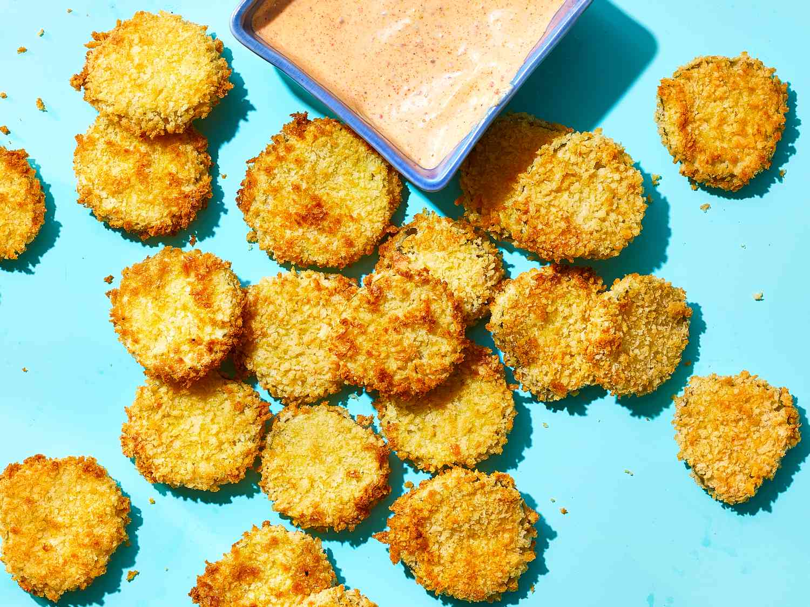

Air Fryer Crispy Pickle Chips with Creole Dipping Sauce

Description
Crispy pickle chips easily cooked in the air fryer. Serve with homemade Creole dipping sauce for a tasty snack.
Ingredients
- 1/2 cup flour
- 2 large eggs
- 1 cup panko bread crumbs
- 1 (16-ounces jar) reduced-sodium dill pickle chips, drained
- 1/4 cup mayonnaise
- 1 tablespoon Creole mustard
Steps
- Preheat air fryer to 350 degrees F (175 degrees C). Lightly coat air fryer basket with cooking spray.
- Put flour in a shallow dish. In a second shallow dish, lightly beat eggs. In a third shallow dish, add panko. Pat pickle chips very dry. Coat pickles in flour, shaking off excess. Dip in eggs, allowing excess to drip off. Toss in panko, lightly pressing to adhere. Arrange pickles in the air fryer basket in an even layer (do not overcrowd), working in batches if needed.
- Cook until pickle chips are golden brown, about 6 minutes.
- Meanwhile, stir together mayonnaise, Creole mustard, lemon juice, and smoked paprika in a small bowl. Serve dipping sauce with pickles.
- Enjoy!